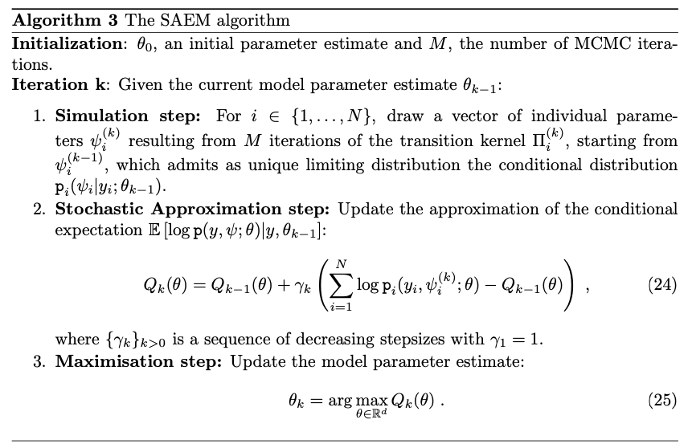
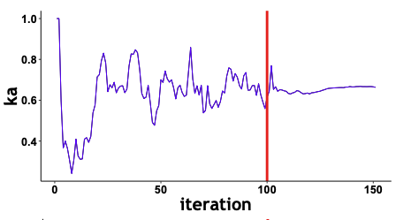
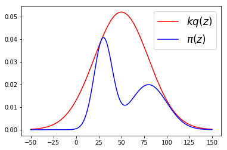
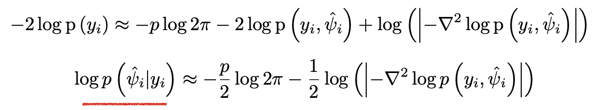
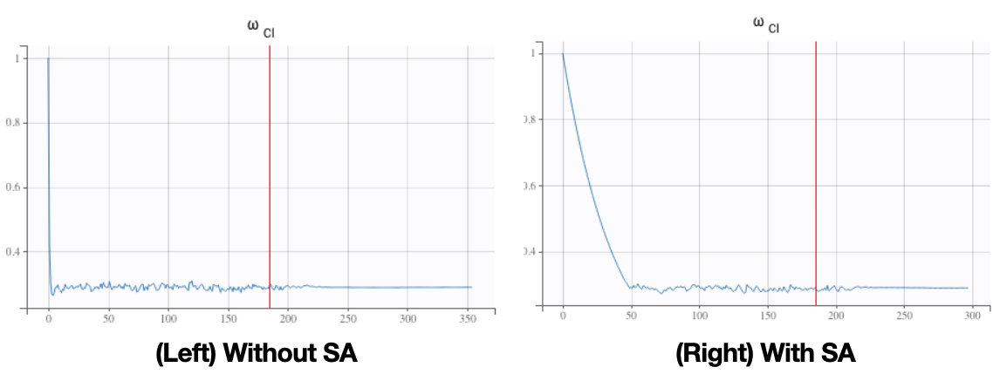

The SAEM Algorithm
For nonlinear models, Expectations under the posterior are intractable. Monte Carlo integration could be used but are generally computationally expensive in order to ensure convergence. The SAEM algorithm (Delyon et. al. , 1999) introduces a Stochastic Approximation update of the EM combining MC integration and Robbins-Monro update to smooth the iterates.
The first stage is thus very stochastic in order to quickly converge to a neighbourhood of the solution. The second stage, where the stepsize is decreasing, ensures almost sure and pointwise convergence of the algorithm without requiring a large number of MC simulations.
Markov Chain Monte Carlo (MCMC)
MCMC algorithms are a class of methods allowing to sample from a complex distribution. An important class of samplers, called Metropolis- Hastings (MH) algorithm, iteratively draw samples from a proposal distribution q and compute an acceptance ratio.
For Independent Sampler, the proposal is independent of the current state of the chain, and its mixing rate is directly related to the ratio of proposal to the target. This naturally suggests to find a (simple) proposal which approximates the target, see Figure below.
Laplace Approximation Method
For complex posterior distributions, sampling or computing expected values according to that distribution can be intractable. In some cases, it is suitable to just pay attention to the region around the highest value, namely the mode.
Laplace Approximation leverages a second-order approximation within that high-valued region. Specifically, a Taylor expansion of the log-likelihood around its maximum point is taken up to the second order.
The resulting approximation of the posterior distribution is thus a simple and tractable multivariate Gaussian distribution.
Simulated annealing
Fitting nonlinear mixed effects models requires optimizing a (highly) nonconvex loss function. Simulated annealing (SA) then allows to escape local maximums and improve the convergence towards the global maximum of that nonconvex loss.
In practice, SA constrains the variance of the random effects and the residual error parameters of the model to a certain decay. This avoids the variances to decrease too fast and allows keeping the explored parameter space large for a longer time. It is often used within the SAEM for fitting non mixed models for instance.
